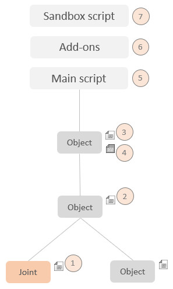

|
Joint callback functionsScripts can include a joint callback function, which is one of many system callback functions. When present and the script's parent is a joint or a descendant of a joint, then it is called by CoppeliaSim in various situations: Joint callback functions enable the user to customize the control loop for specific joints to write low-level control algorithms. The following represents a simple position control joint callback function, for a joint in dynamic mode: #python
# using sim-2
def sysCall_joint(inData):
# inData['mode'] : sim.jointmode_kinematic or sim.jointmode_dynamic
# inData['joint'] : the joint to control
# inData['revolute'] : whether the joint is revolute or prismatic
# inData['cyclic'] : whether the joint is cyclic or not
# inData['bounds'] : the lower and upper bounds of the joint (if the joint is not cyclic)
# inData['dt'] : the step size used for the calculations
# inData['pos'] : the current position
# inData['vel'] : the current velocity (only with Mujoco)
# inData['accel'] : the current acceleration (only with Mujoco)
# inData['targetPos'] : the desired position
# inData['targetVel'] : the desired velocity
# inData['initVel'] : the desired initial velocity
# inData['error'] : targetPos-currentPos (with revolute cyclic joints, the shortest cyclic distance)
# inData['maxVel'] : a maximum velocity
# inData['maxAccel'] : a maximum acceleration
# inData['maxJerk'] : a maximum jerk
# inData['first'] : whether this is the first call from the physics engine, since the joint
# was initialized (or re-initialized) in it.
# inData['passCnt'] : the current dynamics calculation pass. 1-10 by default
# inData['totalPasses'] : the number of dynamics calculation passes for each "regular" simulation pass.
# inData['effort'] : the last force or torque that acted on this joint along/around its axis. With Bullet,
# torques from joint limits are not taken into account
# inData['force'] : the joint force/torque, as set via joint.targetForce
if inData['mode'] == sim.jointmode_dynamic:
# Simplest position controller example:
ctrl = inData['error'] * 20.0
max_velocity = ctrl
if max_velocity > inData['maxVel']:
max_velocity = inData['maxVel']
if max_velocity < -inData['maxVel']:
max_velocity = -inData['maxVel']
force_or_torque_to_apply = inData['maxForce']
# Following data must be returned to CoppeliaSim:
outData = {'vel': max_velocity, 'force': force_or_torque_to_apply}
return outData
# Expected return data:
# For kinematic joints:
# outData = {'pos': pos, 'vel': vel, 'immobile': False}
#
# For dynamic joints:
# outData = {'force': f, 'vel': vel}
--lua
-- using sim-2
function sysCall_joint(inData)
-- inData.mode : sim.jointmode_kinematic or sim.jointmode_dynamic
--
-- inData.joint : the joint to control
-- inData.revolute : whether the joint is revolute or prismatic
-- inData.cyclic : whether the joint is cyclic or not
-- inData.bounds : the lower and upper bounds of the joint
-- inData.dt : the step size used for the calculations
-- inData.pos : the current position
-- inData.vel : the current velocity (only with Mujoco)
-- inData.accel : the current acceleration (only with Mujoco)
-- inData.targetPos : the desired position
-- inData.targetVel : the desired velocity
-- inData.initVel : the desired initial velocity
-- inData.error : targetPos-currentPos (with revolute cyclic joints, the shortest cyclic distance)
-- inData.maxVel : a maximum velocity
-- inData.maxAccel : a maximum acceleration
-- inData.maxJerk : a maximum jerk
-- inData.first : whether this is the first call from the physics engine, since the joint
-- was initialized (or re-initialized) in it.
-- inData.passCnt : the current dynamics calculation pass. 1-10 by default
-- inData.totalPasses : the number of dynamics calculation passes for each "regular" simulation pass.
-- inData.effort : the last force or torque that acted on this joint along/around its axis. With Bullet,
-- torques from joint limits are not taken into account
-- inData.force : the joint force/torque, as set via joint.targetForce
if inData.mode == sim.jointmode_dynamic then
-- Simplest position controller example:
local ctrl = inData.error * 20.0
local maxVelocity = ctrl
if maxVelocity > inData.maxVel then
maxVelocity = inData.maxVel
end
if maxVelocity < -inData.maxVel then
maxVelocity = -inData.maxVel
end
local forceOrTorqueToApply = inData.maxForce
-- Following data must be returned to CoppeliaSim:
local outData = {vel = maxVelocity, force = forceOrTorqueToApply}
return outData
end
-- Expected return data:
-- For kinematic joints:
-- outData = {pos = pos, vel = vel, immobile = false}
--
-- For dynamic joints:
-- outData = {force = f, vel = vel}
end
A joint callback call is applied to all scripts located in the upward hierarchy of the joint, and interrupted as soon as a script handles the call, i.e. returns data:  [Script execution precedence with a joint callback] |